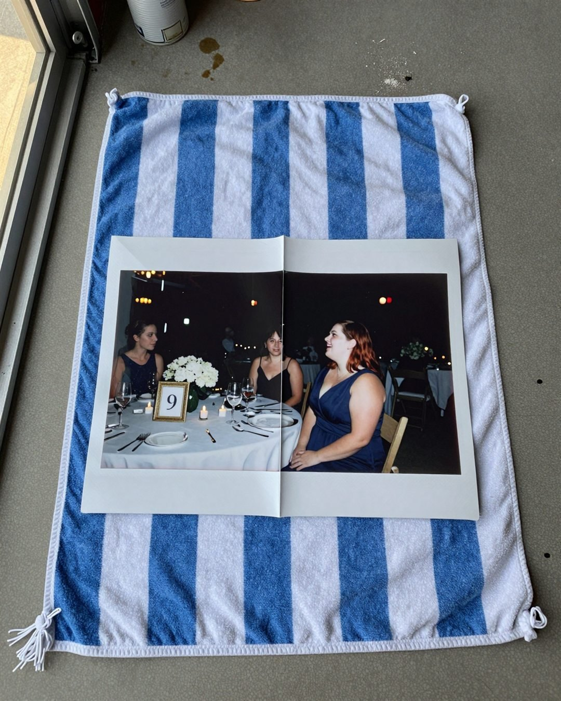
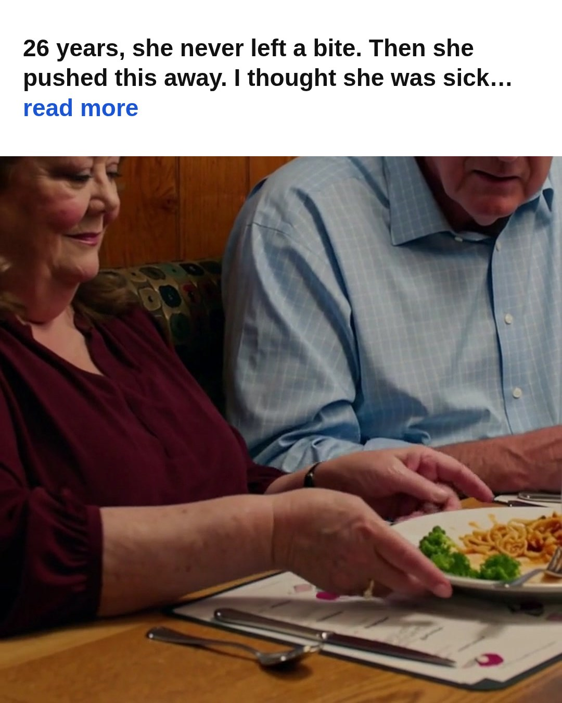
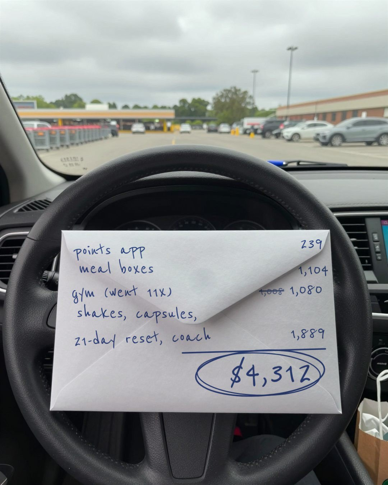

Native ads v6: 5 sections, each one a complete ad set
Every section = one landing page (LS + No-LS) + its image ad (4:5 + 9:16) + its video ad (9:16) + the ad texts. The image and the video in a section both land on that section's page, and the page opens with the exact moment the ad showed. Brand never named. Ad texts carry no telehealth words, so each one runs to either version.
Campaign + ad set settings (same for all 5 sections)
| Campaign objective | Sales (website), or Traffic until the pixel has data |
|---|---|
| Campaign / ad set name | HC_S1 … HC_S5 (one ad set per section = one landing page) |
| Ads per ad set | 2 ads: the image ad + the video ad (Section 1 can add its 4 extra image ads) |
| Location | United States, EXCLUDE Alabama, Arkansas, Louisiana, Mississippi (offer rule) |
| Age | 18+ minimum (Meta's rule for weight-loss ads); story audience = women 35–65 |
| Placements | 4:5 image + video → Feeds · 9:16 image + video → Stories / Reels (use "Customise asset per placement") |
| Call to action | Learn More (every ad) |
| Which URL | LS version only in the LegitScript-approved ad account; No-LS version everywhere else. Every ad text works with both. |
| Tracking | The page's buttons carry s2 per page (hcstory, hcnoise, hcmark, hctwice, hcq5; No-LS pages = …nl). Image vs video split shows in Meta by ad name. |
Section 1 The scale in the garage
No-LS: https://marciagreer6509.github.io/va-posts/humecare-native/story-nols/

Sizes: 4:5 feed (1080×1350) · 9:16 Stories/Reels (1080×1920)

Image ad text
Headline: He found the scale I hid for 3 years · Button: Learn more
All Meta Ads Manager fields for this ad (5 headlines, 2 texts)
| Ad name | HC_S1_IMG_scale-garage |
|---|---|
| Primary text 1 (main) | the text box above ↑ |
| Primary text 2 (short) | My husband found the thing I hid on the top shelf of our garage three years ago. 👆 That's my face about ninety seconds later. What he did next is the reason I'm writing this 👇 |
| Headline 1 | He found the scale I hid for 3 years |
| Headline 2 | He found what I hid in the garage |
| Headline 3 | Wrapped in a beach towel for 3 years |
| Headline 4 | Saturday, August 23. 7:40 a.m. |
| Headline 5 | "You told me the batteries were dead." |
| Description | The morning everything changed |
| Call to action | Learn More |
| Website URL · LS ad account | https://marciagreer6509.github.io/va-posts/humecare-native/story/ |
| Website URL · No-LS ad account | https://marciagreer6509.github.io/va-posts/humecare-native/story-nols/ |
| Display link | leave empty (Meta shows the page address) |
| URL parameters | utm_source=facebook&utm_medium=paid_social&utm_campaign={{campaign.name}}&utm_content={{ad.name}} |
Video ad text
Headline: He kept the first photo for 3 months · Button: Learn more
All Meta Ads Manager fields for this ad (5 headlines, 2 texts)
| Ad name | HC_S1_VID_lockscreen-15s |
|---|---|
| Primary text 1 (main) | the text box above ↑ |
| Primary text 2 (short) | His phone lit up on the kitchen counter and it was a picture of me. Laughing. I hadn't let anyone take my picture in three years. "That's the second one I took," he said. The first one is the whole story 👇 |
| Headline 1 | He kept the first photo for 3 months |
| Headline 2 | "That's the second one I took." |
| Headline 3 | Why did he change his lock screen? |
| Headline 4 | She never knew he kept it |
| Headline 5 | The first photo was in August |
| Description | What was in the first picture |
| Call to action | Learn More |
| Website URL · LS ad account | https://marciagreer6509.github.io/va-posts/humecare-native/story/ |
| Website URL · No-LS ad account | https://marciagreer6509.github.io/va-posts/humecare-native/story-nols/ |
| Display link | leave empty (Meta shows the page address) |
| URL parameters | utm_source=facebook&utm_medium=paid_social&utm_campaign={{campaign.name}}&utm_content={{ad.name}} |
How it connects: LP1, the original story Bob approved. The video is the story's last scene (his lock screen) told as a cliffhanger: the reader has to go back to August to find out what the first photo was.
More image ads for this page (4)


Ad text
Headline: Four words at 1:14 a.m. · Button: Learn more
All Meta Ads Manager fields for this ad (5 headlines, 2 texts)
| Ad name | HC_S1_IMG_lockscreen-114am |
|---|---|
| Primary text 1 (main) | the text box above ↑ |
| Primary text 2 (short) | 1:14 a.m. Four words and two question marks under a wedding photo of me. 👆 She deleted it before breakfast. I didn't let anyone take my picture for three years after that 👇 |
| Headline 1 | Four words at 1:14 a.m. |
| Headline 2 | "wait is that Linda??" |
| Headline 3 | Posted at 1:14 a.m. Deleted by breakfast |
| Headline 4 | Table 9. Tagged in one photo |
| Headline 5 | My own sister-in-law wrote it |
| Description | Three years we never mentioned it |
| Call to action | Learn More |
| Website URL · LS ad account | https://marciagreer6509.github.io/va-posts/humecare-native/story/ |
| Website URL · No-LS ad account | https://marciagreer6509.github.io/va-posts/humecare-native/story-nols/ |
| Display link | leave empty (Meta shows the page address) |
| URL parameters | utm_source=facebook&utm_medium=paid_social&utm_campaign={{campaign.name}}&utm_content={{ad.name}} |



Ad text
Headline: What was folded inside the towel · Button: Learn more
All Meta Ads Manager fields for this ad (5 headlines, 2 texts)
| Ad name | HC_S1_IMG_folded-photo |
|---|---|
| Primary text 1 (main) | the text box above ↑ |
| Primary text 2 (short) | I kept this photo folded inside a beach towel in our garage for three years. 👆 Right next to the thing I told my husband was broken. Then one Saturday he found both 👇 |
| Headline 1 | What was folded inside the towel |
| Headline 2 | Folded inside a towel for 3 years |
| Headline 3 | Top shelf. Behind the deck stain. |
| Headline 4 | The photo I never showed anyone |
| Headline 5 | Table 9, Kayla's wedding |
| Description | Why I kept it hidden |
| Call to action | Learn More |
| Website URL · LS ad account | https://marciagreer6509.github.io/va-posts/humecare-native/story/ |
| Website URL · No-LS ad account | https://marciagreer6509.github.io/va-posts/humecare-native/story-nols/ |
| Display link | leave empty (Meta shows the page address) |
| URL parameters | utm_source=facebook&utm_medium=paid_social&utm_campaign={{campaign.name}}&utm_content={{ad.name}} |


Ad text
Headline: The question I couldn't answer · Button: Learn more
All Meta Ads Manager fields for this ad (5 headlines, 2 texts)
| Ad name | HC_S1_IMG_bathroom-door |
|---|---|
| Primary text 1 (main) | the text box above ↑ |
| Primary text 2 (short) | I stayed behind this door for an hour. 👆 My husband left a coffee on the carpet and asked me one question through it. I couldn't answer it. Here's the question 👇 |
| Headline 1 | The question I couldn't answer |
| Headline 2 | I stayed behind this door for an hour |
| Headline 3 | He left a coffee on the carpet |
| Headline 4 | One question I couldn't answer |
| Headline 5 | What he asked through the door |
| Description | The question that changed it |
| Call to action | Learn More |
| Website URL · LS ad account | https://marciagreer6509.github.io/va-posts/humecare-native/story/ |
| Website URL · No-LS ad account | https://marciagreer6509.github.io/va-posts/humecare-native/story-nols/ |
| Display link | leave empty (Meta shows the page address) |
| URL parameters | utm_source=facebook&utm_medium=paid_social&utm_campaign={{campaign.name}}&utm_content={{ad.name}} |


Ad text
Headline: "Step away from the fridge, Lin." · Button: Learn more
All Meta Ads Manager fields for this ad (5 headlines, 2 texts)
| Ad name | HC_S1_IMG_denise-thread |
|---|---|
| Primary text 1 (main) | the text box above ↑ |
| Primary text 2 (short) | Denise and I split a plate of lemon bars every month for nine years. 👆 Then she walked in one September looking different. I asked her what changed. Her answer is in these texts 👇 |
| Headline 1 | "Step away from the fridge, Lin." |
| Headline 2 | "Step away from the fridge, Lin." |
| Headline 3 | My dessert person stopped |
| Headline 4 | 9 years of lemon bars. Then she quit. |
| Headline 5 | What Denise did in September |
| Description | Read the texts |
| Call to action | Learn More |
| Website URL · LS ad account | https://marciagreer6509.github.io/va-posts/humecare-native/story/ |
| Website URL · No-LS ad account | https://marciagreer6509.github.io/va-posts/humecare-native/story-nols/ |
| Display link | leave empty (Meta shows the page address) |
| URL parameters | utm_source=facebook&utm_medium=paid_social&utm_campaign={{campaign.name}}&utm_content={{ad.name}} |
Section 2 Food noise · “I will if you will”
No-LS: https://marciagreer6509.github.io/va-posts/humecare-native/noise-nols/

Sizes: 4:5 feed (1080×1350) · 9:16 Stories/Reels (1080×1920)

Image ad text
Headline: Her text that night: "you left me." · Button: Learn more
All Meta Ads Manager fields for this ad (5 headlines, 2 texts)
| Ad name | HC_S2_IMG_lemonbars-hand |
|---|---|
| Primary text 1 (main) | the text box above ↑ |
| Primary text 2 (short) | That's my hand 👆 Nine years it has never stopped above that plate. Last month it did. At 11:48 p.m. my best friend sent me three words: "you left me." 👇 |
| Headline 1 | Her text that night: "you left me." |
| Headline 2 | My hand stopped 4 inches above the plate |
| Headline 3 | "I will if you will." Then I didn't. |
| Headline 4 | 9 years. It never stopped before. |
| Headline 5 | Three words at 11:48 p.m. |
| Description | What I hid from her for 23 days |
| Call to action | Learn More |
| Website URL · LS ad account | https://marciagreer6509.github.io/va-posts/humecare-native/noise/ |
| Website URL · No-LS ad account | https://marciagreer6509.github.io/va-posts/humecare-native/noise-nols/ |
| Display link | leave empty (Meta shows the page address) |
| URL parameters | utm_source=facebook&utm_medium=paid_social&utm_campaign={{campaign.name}}&utm_content={{ad.name}} |
Video ad text
Headline: I ran out of paper at 112 · Button: Learn more
All Meta Ads Manager fields for this ad (5 headlines, 2 texts)
| Ad name | HC_S2_VID_lemonbars-15s |
|---|---|
| Primary text 1 (main) | the text box above ↑ |
| Primary text 2 (short) | Nine years of "I will if you will." Then one Thursday night, I didn't. My hand just stopped. The voice that always talks me into it had nothing to say. Here's why it went quiet 👇 |
| Headline 1 | I ran out of paper at 112 |
| Headline 2 | "Denise. I don't want it." |
| Headline 3 | Nine years of "I will if you will" |
| Headline 4 | Her text that night: "you left me." |
| Headline 5 | The voice in my head went quiet |
| Description | 112 marks on a sticky note |
| Call to action | Learn More |
| Website URL · LS ad account | https://marciagreer6509.github.io/va-posts/humecare-native/noise/ |
| Website URL · No-LS ad account | https://marciagreer6509.github.io/va-posts/humecare-native/noise-nols/ |
| Display link | leave empty (Meta shows the page address) |
| URL parameters | utm_source=facebook&utm_medium=paid_social&utm_campaign={{campaign.name}}&utm_content={{ad.name}} |
How it connects: Hook = a countable villain: 112 pencil marks before noon on a 'perfect' diet morning, so the $4,312 of fixes read as shouting over the noise. The video/image ad moment (hand stops above the lemon bars, tear, "Denise. I don't want it.", 11:48 p.m. text "you left me.") is the cold open, first ~250 words, with lp2-lemonbars.jpg + vs-lemon-tear.jpg inline and vs-lemon-hand.jpg as hero; the page then goes back 23 days (Owen at the fridge, the sticky note, envelope, 9:12, bathtub search, reveal). New twist on 'I will if you will' = permission between two women with the same voice, which is why Linda went alone; payoff = porch at 7:10 a.m. ("Mine would need a second sheet"), Denise does the two minutes, November book club leaves bars on the plate, closing text "Lin. It's 9:12. Listen." No scale numbers anywhere: change is shown as the half sandwich, Mark's "You haven't gotten up", and the re-count she forgot to finish. Dates are real 2026 weekdays (Tue 22 Sep, Thu 15 Oct, Thu 19 Nov). 2 new photos requested: lp2-tally.jpg (tally-mark sticky note, no text) and lp2-wrap.jpg (untouched wrapped lemon bars); lp2-lemonbars.jpg listed under allowed_stills because it is still being rendered.
Section 3 The husband’s side · “I thought she was sick”
No-LS: https://marciagreer6509.github.io/va-posts/humecare-native/mark-nols/

Sizes: 4:5 feed (1080×1350) · 9:16 Stories/Reels (1080×1920)


Image ad text
Headline: I thought my wife was sick · Button: Learn more
All Meta Ads Manager fields for this ad (5 headlines, 2 texts)
| Ad name | HC_S3_IMG_plate-pushed-away |
|---|---|
| Primary text 1 (main) | the text box above ↑ |
| Primary text 2 (short) | 26 years my wife never left a bite. 👆 Then one Friday she pushed this plate away and smiled. I thought she was sick. I was wrong about everything 👇 |
| Headline 1 | I thought my wife was sick |
| Headline 2 | 26 years she never left a bite |
| Headline 3 | Then she pushed this plate away |
| Headline 4 | Booth 14. Friday night. Half a plate. |
| Headline 5 | I asked if she was okay |
| Description | A husband's side of it |
| Call to action | Learn More |
| Website URL · LS ad account | https://marciagreer6509.github.io/va-posts/humecare-native/mark/ |
| Website URL · No-LS ad account | https://marciagreer6509.github.io/va-posts/humecare-native/mark-nols/ |
| Display link | leave empty (Meta shows the page address) |
| URL parameters | utm_source=facebook&utm_medium=paid_social&utm_campaign={{campaign.name}}&utm_content={{ad.name}} |
Video ad text
Headline: Then a box showed up on our porch · Button: Learn more
All Meta Ads Manager fields for this ad (5 headlines, 2 texts)
| Ad name | HC_S3_VID_mark-car-20s |
|---|---|
| Primary text 1 (main) | the text box above ↑ |
| Primary text 2 (short) | I recorded this in my driveway because I couldn't make myself go inside. Twenty-six years, my wife never left a bite. Tonight she left half. "I've never been better," she said. Then I found the box 👇 |
| Headline 1 | Then a box showed up on our porch |
| Headline 2 | "I've never been better." |
| Headline 3 | I recorded this in my driveway |
| Headline 4 | My wife started leaving food on her plate |
| Headline 5 | A box showed up on our porch |
| Description | What he found in the box |
| Call to action | Learn More |
| Website URL · LS ad account | https://marciagreer6509.github.io/va-posts/humecare-native/mark/ |
| Website URL · No-LS ad account | https://marciagreer6509.github.io/va-posts/humecare-native/mark-nols/ |
| Display link | leave empty (Meta shows the page address) |
| URL parameters | utm_source=facebook&utm_medium=paid_social&utm_campaign={{campaign.name}}&utm_content={{ad.name}} |
How it connects: Hook = a husband's fear, not a diet story: the open loop is 'what is wrong with her / what is in the box', held for a third of the page, and the answer flips fear into the food-noise idea seen from outside (he heard the 9:12 fridge door from his chair for 26 years and never knew it was a voice). Video ad lands in the first two blocks, same order as the film: the driveway selfie opens the page (hero = vs-mark-car.jpg), then 'Booth 14' has the half plate and the exact lines 'Lin. Are you okay?' / 'I've never been better'. Image ad (lp3-plate.jpg) lands in the same 'Booth 14' block (inline still vs-mark-plate.jpg); its primary text is that chapter cut at Mark sitting across from the unopened box. End card 'a box showed up on the porch' pays off in section 5, the $4,312 envelope explains why she hid it, the reveal is Mark reading the fine print because he assumed a scam. Two new photos requested: lp3-box.jpg (the porch box) and lp3-2am.jpg (laptop at the kitchen table); lp3-plate.jpg is the ad image only and is not used on the page. One liberty to flag: the reveal says her FIRST box came the day after she answered, so the porch box Mark finds reads as a later delivery (the brief states no shipment frequency).
Section 4 It came back. Twice.
No-LS: https://marciagreer6509.github.io/va-posts/humecare-native/twice-nols/

Sizes: 4:5 feed (1080×1350) · 9:16 Stories/Reels (1080×1920)

Image ad text
Headline: The 3 boxes in my attic · Button: Learn more
All Meta Ads Manager fields for this ad (5 headlines, 2 texts)
| Ad name | HC_S4_IMG_shadow-graduation |
|---|---|
| Primary text 1 (main) | the text box above ↑ |
| Primary text 2 (short) | 👆 See that shadow on the walkway? That's me. The only proof I was at my own daughter's graduation. I'd fixed it twice before. Twice it came back. This time it didn't 👇 |
| Headline 1 | The 3 boxes in my attic |
| Headline 2 | That shadow is me |
| Headline 3 | The only proof I was at her graduation |
| Headline 4 | I circled it in red and wrote "me" |
| Headline 5 | Three years behind the phone |
| Description | Why this time was different |
| Call to action | Learn More |
| Website URL · LS ad account | https://marciagreer6509.github.io/va-posts/humecare-native/twice/ |
| Website URL · No-LS ad account | https://marciagreer6509.github.io/va-posts/humecare-native/twice-nols/ |
| Display link | leave empty (Meta shows the page address) |
| URL parameters | utm_source=facebook&utm_medium=paid_social&utm_campaign={{campaign.name}}&utm_content={{ad.name}} |
Video ad text
Headline: Twice it came back. Not this time. · Button: Learn more
All Meta Ads Manager fields for this ad (5 headlines, 2 texts)
| Ad name | HC_S4_VID_picture-30s |
|---|---|
| Primary text 1 (main) | the text box above ↑ |
| Primary text 2 (short) | "Mom! Get in this one!" "No, no. Somebody has to take it." I said that for three years. This fall I handed my daughter the phone. What changed the third time 👇 |
| Headline 1 | Twice it came back. Not this time. |
| Headline 2 | "Mom! Get in this one!" |
| Headline 3 | Last summer I said no. This fall... |
| Headline 4 | "Somebody has to take it." |
| Headline 5 | Twice I lost it. Twice it came back. |
| Description | See what was different |
| Call to action | Learn More |
| Website URL · LS ad account | https://marciagreer6509.github.io/va-posts/humecare-native/twice/ |
| Website URL · No-LS ad account | https://marciagreer6509.github.io/va-posts/humecare-native/twice-nols/ |
| Display link | leave empty (Meta shows the page address) |
| URL parameters | utm_source=facebook&utm_medium=paid_social&utm_campaign={{campaign.name}}&utm_content={{ad.name}} |
How it connects: Hook logic: she is GOOD at losing it (did it twice) so the question is not 'why can't I' but 'why does it come back' — answered by Denise's line 'What came back first, the weight or the voice?'; the unlabeled third box (the big clothes kept 'just in case') is the secret that pulls the reader to the end, where she marks it DONATE with no promise it can never return, only what is different so far (noise down, two scanner lines on the flat week 6, a real person to message). Video ad lands twice: last-summer backyard = the opening scene + hero (vs-pic-last.jpg); this-fall 'Here. Take one of me.' = section 'This fall. Same backyard.' (vs-pic-this.jpg), then continues past the end card into the third box. Image ad (v5-shadow.jpg) lands in section 2 '"Let me take it!"', within the first fifth, and its primary text is that chapter cut at the attic floor. One new photo requested: lp4-boxes.jpg (used in 'Three boxes'). No scale number, size number or pounds anywhere; the fit of the green dress is deliberately not stated.
Section 5 The 5 questions (Black Friday · warm/retargeting)
No-LS: https://marciagreer6509.github.io/va-posts/humecare-native/questions-nols/

Sizes: 4:5 feed (1080×1350) · 9:16 Stories/Reels (1080×1920)


Image ad text
Headline: $4,312. Then she asked what it costs. · Button: Learn more
All Meta Ads Manager fields for this ad (5 headlines, 2 texts)
| Ad name | HC_S5_IMG_envelope-4312 |
|---|---|
| Primary text 1 (main) | the text box above ↑ |
| Primary text 2 (short) | 👆 I added this up in a grocery store parking lot. $4,312. This morning I sent it to Carol, the one person I swore would never see it. She wrote back five questions 👇 |
| Headline 1 | $4,312. Then she asked what it costs. |
| Headline 2 | $4,312 on the back of an envelope |
| Headline 3 | I sent it to the one person I swore wouldn't see it |
| Headline 4 | Then Carol asked what it costs |
| Headline 5 | Parking-lot math I never showed anyone |
| Description | Her 5 questions and my answers |
| Call to action | Learn More |
| Website URL · LS ad account | https://marciagreer6509.github.io/va-posts/humecare-native/questions/ |
| Website URL · No-LS ad account | https://marciagreer6509.github.io/va-posts/humecare-native/questions-nols/ |
| Display link | leave empty (Meta shows the page address) |
| URL parameters | utm_source=facebook&utm_medium=paid_social&utm_campaign={{campaign.name}}&utm_content={{ad.name}} |
Video ad text
Headline: The 5 questions Carol asked first · Button: Learn more
All Meta Ads Manager fields for this ad (5 headlines, 2 texts)
| Ad name | HC_S5_VID_carol-10s |
|---|---|
| Primary text 1 (main) | the text box above ↑ |
| Primary text 2 (short) | That's Carol. The one who wrote "wait is that Linda??" under my photo at 1:14 a.m. She watched me all through Thanksgiving and said nothing. At 6:52 a.m. she sent five questions. Here are my answers 👇 |
| Headline 1 | The 5 questions Carol asked first |
| Headline 2 | "Okay, Linda. You win. Two minutes." |
| Headline 3 | She swore she'd never try |
| Headline 4 | 5 blunt questions at 6:52 a.m. |
| Headline 5 | "wait is that Linda??" |
| Description | See the 5 questions |
| Call to action | Learn More |
| Website URL · LS ad account | https://marciagreer6509.github.io/va-posts/humecare-native/questions/ |
| Website URL · No-LS ad account | https://marciagreer6509.github.io/va-posts/humecare-native/questions-nols/ |
| Display link | leave empty (Meta shows the page address) |
| URL parameters | utm_source=facebook&utm_medium=paid_social&utm_campaign={{campaign.name}}&utm_content={{ad.name}} |
How it connects: Hook: the sceptic IS the wound. Carol (the 1:14 a.m. 'wait is that Linda??' commenter) texts 5 blunt questions on Black Friday morning after watching Linda leave half a slice of pie and step INTO a photo at Thanksgiving; each answer carries the real terms, each section ends on her next number. VIDEO moment (parking lot, 'Okay, Linda. You win. Two minutes.' … 'Oh.') is shown with the vs-carol still in the first fifth as an open loop and paid off in the section '"Oh."' (it asked what she had already tried; then a yes, box tomorrow). IMAGE moment (v5-envelope) is the whole answer to question 2, about one-third down: Linda sends the envelope photo instead of typing, then $199 vs $299 and the $120/month logic. Twist + close: the 1:14 comment was about Carol herself (her voice is 8:45), and at 1:14 p.m. she comments 'that's Linda.' and leaves it up. One new image requested: lp5-pie.jpg. LS and No-LS differ only in the reveal block under question 1.